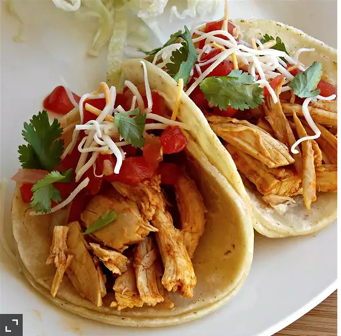

Steve's Roasted Chicken Soft Tacos

Rotisserie chicken soft tacos made with homemade
flour tortillas and pico de gallo.
When I find myself taking the easy way out of
making dinner by picking up a roast chicken
at the market, I try to make up for it by
making the leftover chicken taste like
something new. This recipe totally works
for me. The only thing I add is a big squeeze
of lime juice. My husband likes to put sour
cream on his, but that's just how he rolls.
Oh, and I heat up the tortillas.
Ingredients
- 1 teaspoon vegetable oil
- 1 rotisserie chicken, meat removed
and chopped
- 1 tablespoon chili powder
- 1 teaspoon cayenne pepper
- salt and ground black pepper to taste
- 12 flour tortillas
- 2 cups pico de gallo salsa
- 1/2 cup shredded Mexican cheese blend
Steps to Perfection!
- Heat vegetable oil in a skillet over medium heat;
cook and stir chicken, chili powder, cayenne pepper,
salt, and black pepper together in the hot oil until
chicken is heated through, about 10 minutes. Spoon
chicken mixture onto each tortilla and top with pico
de gallo and Mexican cheese blend.